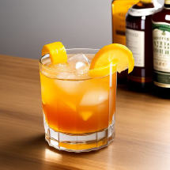

Уиски смаш
Приблизително разграждане от тялото за:
3-6 часа
Съставки:
Инструкции:
В чаша разтъркайте мента с лимоновия сок и захарния сироп. Напълнете чашата с кубчета лед, след което добавете бърбъна или уискито. Разбъркайте внимателно.